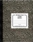

| Journal |  | |||||||||||||
You must independently keep a course journal in a note book. The following points specify what your journal should look like. Keep a separate notebook for your lecture notes. Purpose Keeping a personal course journal has three purposes: it will help you manage your partnership; it will teach you how to take notes; and you will need to document problems with your partnership in case you want to switch. First Page The first page of your journal is dedicated to information about your partner. You should enter the following information on this page: name, address, (cell) phone, email address and optionally a screen name if you wish to use an IM tool. Put nothing else on this page. Projects Create a new cover page for each project. Enter on this page the title of the project, which parts you intend to do, and how much time (in minutes) each part and overall you will need for the project. Create a conclusion page for each project. Record on the page how many meetings you conducted and how much time (in minutes) you actually spent on the project. Note: you won't get credit for accurate time estimates. For your own sake, you should be as honest as you can with these estimates, so that you learn to estimate how much time real project work will consume. Meetings Create a new page for each meeting. The first five lines should specify:
| |||||||||||||||
| last updated on Tue Jun 9 22:03:19 EDT 2009 | generated with PLT Scheme |